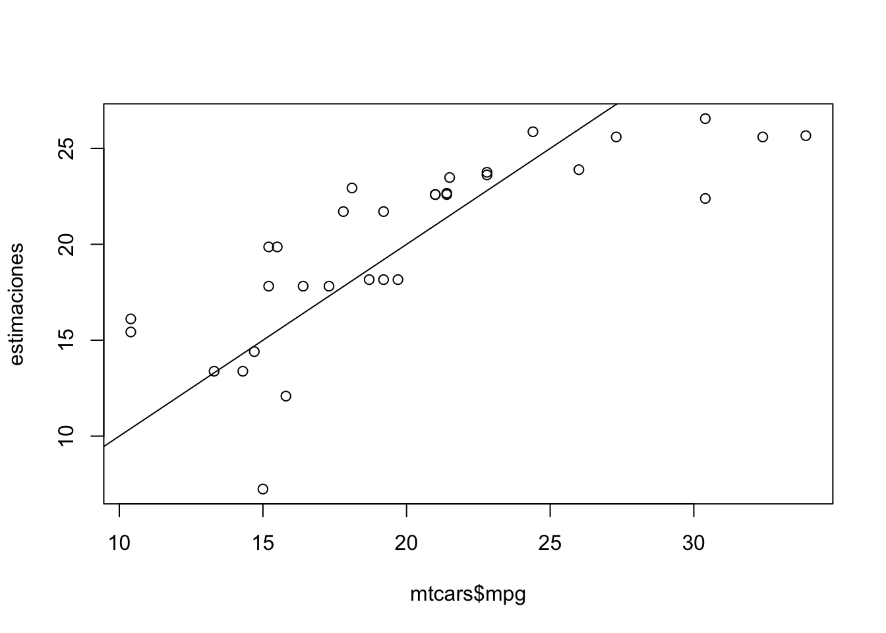
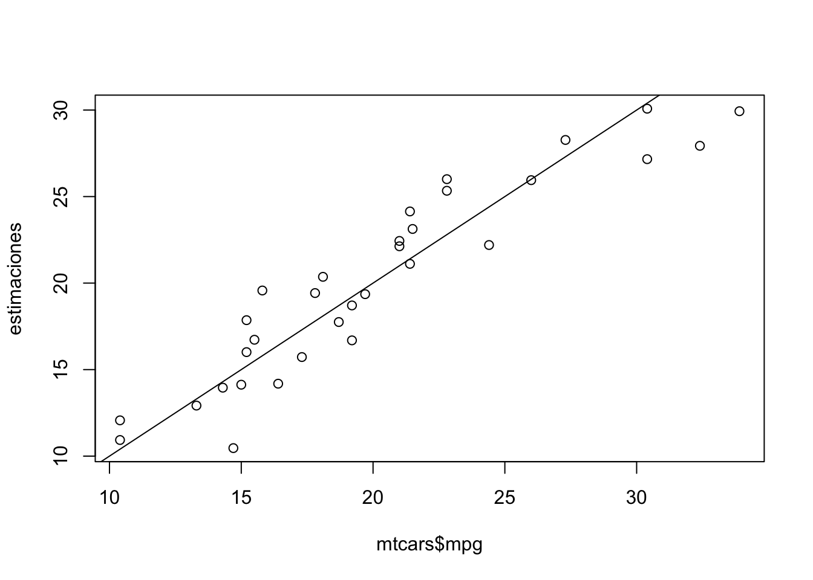

# Cargamos datos
data(mtcars)Este es un post de apoyo para el video de YouTube donde se explica cómo realizar una regresión lineal en R paso a paso. Puedes ver el video aquí: Regresión lineal en R - YouTube.
Cargar datos
Usaremos el conjunto de datos “mtcars”, el cual viene por defecto en tu instalación de R. Lo puedes cargar a tu sesión con la siguiente instrucción:
Este dataset incluye información sobre diferentes modelos de automóviles, incluyendo variables como el consumo de combustible medido en millas por galón (mpg), el número de cilindros (cyl), el peso del vehículo (wt), entre otras.
Nuestra tarea será entrenar un modelo de regresión lineal para predecir el consumo de combustible (mpg) en función del resto de las variables en el dataset.
Analizar relaciones con plot()
Antes de entrenar el modelo, es importante analizar las relaciones entre las variables. Podemos usar la función plot() para visualizar estas relaciones:
# Gráfico de dispersión
plot(mtcars$hp,mtcars$mpg)
En este gráfico de dispersión, podemos observar la relación entre la potencia del motor (hp) y el consumo de combustible (mpg). A simple vista, parece que hay una relación negativa entre estas dos variables: a mayor potencia, menor consumo de combustible.
Regresión simple
Podemos tomar esta variable (hp) para entrenar un modelo de regresión lineal simple, dado la relación observada. Usamos la función lm() para esto:
# Regresión lineal simple
regresion_simple <- lm(mpg ~ hp, data = mtcars)
# summary(regresion_simple)Aquí, mpg ~ hp indica que estamos modelando mpg como una función de hp. La función lm() ajusta el modelo de regresión lineal a los datos proporcionados en el segundo argumento. Entraremos al detalle de la función summary() más adelante.
Para saber si nuestro modelo tuvo un buen ajuste, usamos la función predict() para obtener las predicciones del modelo y graficarlas junto con los datos originales:
# Guardamos valores estimados
estimaciones <- predict(regresion_simple)
# Grafica reales vs estimados
plot(mtcars$mpg, estimaciones)
abline(a = 0, b = 1) # Linea de identidad
Nuestro objetivo es que los puntos están lo más cerca posible a la línea de identidad, ya que esta representa el espacio donde los valores reales y valores predichos son iguales.
¡Muy bien! Tenemos un buen ajuste, sin embargo, aún tenemos algunos puntos alejados de nuestra linea de identidad, lo cuál solucionaremos a continuación.
Regresión múltiple
Podemos mejorar nuestro modelo incluyendo las variables que aún no hemos considerado. Esto, lo hacemos sumando más variables en la fórmula del modelo:
# Regresión lineal múltiple
regresion_multiple <- lm(mpg~0+cyl+disp+hp+drat+wt+qsec+vs+am+gear+carb,
mtcars)Aquí, hemos incluido todas las variables disponibles en el dataset mtcars para predecir mpg. El 0+ al inicio de la fórmula indica que no queremos incluir el intercepto en el modelo.
Nuevamente, usamos la función predict() para obtener las predicciones del modelo y graficarlas junto con los datos originales:
# Guardamos valores estimados
estimaciones <- predict(regresion_multiple)
# Grafica reales vs estimados
plot(mtcars$mpg, estimaciones)
abline(a = 0, b = 1) # Linea de identidad
¡Muy bien!, ahora los puntos están mucho más cerca de la línea de identidad, lo que indica que nuestro modelo tiene un mejor ajuste.
La función summary()
Finalmente, podemos usar la función summary() para obtener un resumen detallado del modelo de regresión lineal múltiple:
# Detalle regresion multiple
summary(regresion_multiple)
Call:
lm(formula = mpg ~ 0 + cyl + disp + hp + drat + wt + qsec + vs +
am + gear + carb, data = mtcars)
Residuals:
Min 1Q Median 3Q Max
-3.7721 -1.6249 0.1699 1.1068 4.4666
Coefficients:
Estimate Std. Error t value Pr(>|t|)
cyl 0.35083 0.76292 0.460 0.6501
disp 0.01354 0.01762 0.768 0.4504
hp -0.02055 0.02144 -0.958 0.3483
drat 1.24158 1.46277 0.849 0.4051
wt -3.82613 1.86238 -2.054 0.0520 .
qsec 1.19140 0.45942 2.593 0.0166 *
vs 0.18972 2.06825 0.092 0.9277
am 2.83222 1.97513 1.434 0.1656
gear 1.05426 1.34669 0.783 0.4421
carb -0.26321 0.81236 -0.324 0.7490
---
Signif. codes: 0 '***' 0.001 '**' 0.01 '*' 0.05 '.' 0.1 ' ' 1
Residual standard error: 2.616 on 22 degrees of freedom
Multiple R-squared: 0.9893, Adjusted R-squared: 0.9844
F-statistic: 203 on 10 and 22 DF, p-value: < 2.2e-16La salida de summary() incluye información importante como los coeficientes de las variables, el valor de R-cuadrado (que indica qué tan bien el modelo explica la variabilidad de los datos), y los valores p asociados a cada coeficiente (que nos ayudan a determinar la significancia estadística de cada variable en el modelo).
Para una explicación detallada de cada uno de estos elementos, te invito a ver el video en YouTube donde se discuten estos aspectos en profundidad.
¡Eso es todo! ¡Saludos y hasta la próxima!